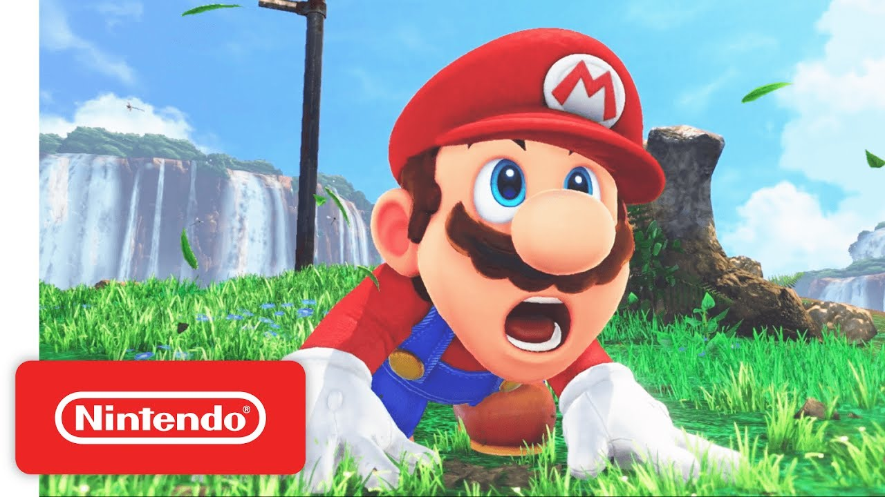

Nintendo diz que Mario tem sete empregos
Complementando a renda!

Lembra quando você assistia Todo Mundo Odeia o Chris e achava impressionante o Julius ter dois empregos? Esqueça isso, o Mario tem sete, sim, sete, segundo a Nintendo. No blog Nintendo Soup, foram listadas todas as profissões do personagem. 1- Encanador 2- Médico 3- Piloto 4- Artista Marcial 5- Jogador profissional de Baseball 6- Jogador de Futebol 7- Jogador de Basquete.